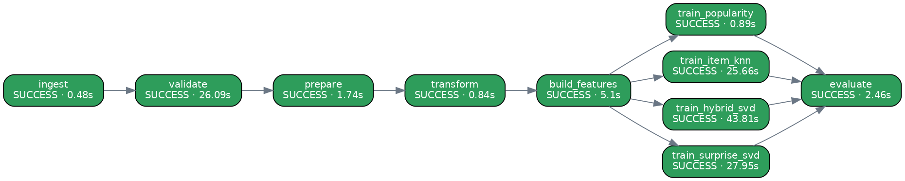

| Task | Stage | Status | Attempts | Seconds | Depends on | Result |
|---|---|---|---|---|---|---|
| ingest | Data Ingestion | success | 1 | 0.48 | — | {'users': 6040, 'items': 3883, 'interactions': 1000209} |
| validate | Data Validation | success | 1 | 26.09 | ingest | {'gate_passed': True, 'users_rejected': 0, 'items_rejected': 0, 'interactions_rejected': 0} |
| prepare | Data Preparation | success | 1 | 1.74 | validate | {'users_age_imputed': 0, 'users_gender_filled': 0, 'users_country_filled': 6040, 'items_title_filled' |
| transform | Data Transformation | success | 1 | 0.84 | prepare | {'train': 800164, 'val': 100020, 'test': 200045, 'matrix_density': 0.03412} |
| build_features | Feature Management | success | 1 | 5.1 | transform | {'feature_views': ['user_features', 'item_features'], 'materialized_as_of': '2000-12-02 14:52:1 |
| train_popularity | Model Training | success | 1 | 0.89 | build_features | {'model': 'popularity', 'run_id': 'cb81527e8d7e4ba8899a2595c658d79a', 'params': {'mod |
| train_item_knn | Model Training | success | 1 | 25.66 | build_features | {'model': 'item_knn', 'run_id': '6bfe70ffe6ce43eea6f4b683b0f6b3a8', 'params': {'model |
| train_hybrid_svd | Model Training | success | 1 | 43.81 | build_features | {'model': 'hybrid_svd', 'run_id': '0a7995765bc444c4880db4783a1f20e1', 'params': {'mod |
| train_surprise_svd | Model Training | success | 1 | 27.95 | build_features | {'model': 'surprise_svd', 'run_id': '775bcea58ff1428aad89f93f4cf03b2f', 'params': {'m |
| evaluate | Model Evaluation | success | 1 | 2.46 | train_popularity, train_item_knn, train_hybrid_svd, train_surprise_svd | {'best_ndcg_model': 'item_knn', 'ndcg@10_popularity': 0.2145, 'ndcg@10_item_knn': 0.25, 'ndcg@1 |
06:49:04 src.orchestration | START ingest (attempt 1/2) 06:49:04 src.orchestration | SUCCESS ingest in 0.5s 06:49:04 src.orchestration | START validate (attempt 1/2) 06:49:30 src.orchestration | SUCCESS validate in 26.1s 06:49:30 src.orchestration | START prepare (attempt 1/2) 06:49:32 src.orchestration | SUCCESS prepare in 1.7s 06:49:32 src.orchestration | START transform (attempt 1/2) 06:49:33 src.orchestration | SUCCESS transform in 0.8s 06:49:33 src.orchestration | START build_features (attempt 1/2) 06:49:38 src.orchestration | SUCCESS build_features in 5.1s 06:49:38 src.orchestration | START train_hybrid_svd (attempt 1/2) 06:49:38 src.orchestration | START train_item_knn (attempt 1/2) 06:49:38 src.orchestration | START train_popularity (attempt 1/2) 06:49:39 src.orchestration | SUCCESS train_popularity in 0.9s 06:49:39 src.orchestration | START train_surprise_svd (attempt 1/2) 06:50:04 src.orchestration | SUCCESS train_item_knn in 25.7s 06:50:07 src.orchestration | SUCCESS train_surprise_svd in 27.9s 06:50:22 src.orchestration | SUCCESS train_hybrid_svd in 43.8s 06:50:22 src.orchestration | START evaluate (attempt 1/2) 06:50:24 src.orchestration | SUCCESS evaluate in 2.5s